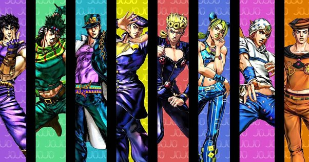

https://jojo.fandom.com/wiki/Gold_Experience_Requiem

https://www.researchgate.net/figure/A-Simple-Computer-Network_fig1_256017856

https://www.intel.ca/content/www/ca/en/education/k12/the-journey-inside/explore-the-curriculum/internet.html
https://www.quora.com/Who-is-the-main-character-of-JoJo-s-Bizarre-Adventure

https://www.lucidchart.com/blog/how-to-give-feedback